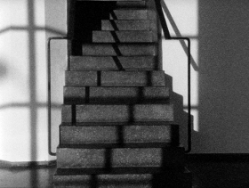

Exhibition Talks
Sasha Pirker, Lotte Schreiber – Österreich 2015
9 min – HD – dt.OmeU
B+P: Sasha Pirker, Lotte Schreiber – V: Sixpack Film
Wenn, wie Walter Benjamin behauptet hat, Gebäude auf doppelte Art, durch Gebrauch und Wahrnehmung rezipiert werden, d.h. taktil und optisch, dann könnte man Sasha Pirkers und Lotte Schreibers EXHIBITION TALKS als Versuch verstehen, diese doppelte Rezeptionsweise ein Stück weit zu entkoppeln. Während auf der Tonspur vom Gebrauch der Ausstellungsräume des Tiroler Architekturforums die Rede ist, von den Gegebenheiten der einzelnen Räume und den Möglichkeiten, sie für eigene Bedürfnisse zu adaptieren, liefert die Bildspur fragmentarische, statische und in Schwarzweiß gehaltene Ansichten derselben Räume, die allein schon deshalb im optischen Register verharren, weil sie über die Montage zu keinem kohärenten Raumganzen verbunden werden. – Vrääth Öhner
montag 12 okt 22.30 uhr werkstattkino
Lotte Schreiber geb. 1971 in Mürzzuschlag in Österreich. Lebt und arbeitet in Wien als Filmemacherin und Künstlerin.
Filme (Auswahl) 36 (mit Norbert Pfaffenbichler) 2001 – QUADRO 2002 – I.E. 2003 – Piano Phase (mit Pfaffenbichler) 2004 – DOMINO (2005) – a1b2c3 (mit Pfaffenbichler) 2006 – BORGATE (2008) – Git Cut Noise 2011 – tracing THALERHOF 2014
Sasha Pirker geb. 1969 in Wien. Bildende Künstlerin und Filmemacherin. Studium der Linguistik in Wien und Paris. Unterrichtet seit 2006 an der Akademie der Bildenden Künste im Bereich Film, Video und Kunst.
Filme (Auswahl) John Lautner, the Desert Hot Springs Motel 2007 – It looks like a Japanese film 2011 – Closed Cicuit 2013 – Livepan 2013 (9. UX) – Es gibt Bilder, weil es Wände gibt – Ein Prolog 2013 (9. UX)